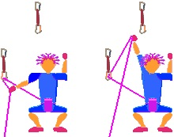
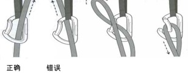
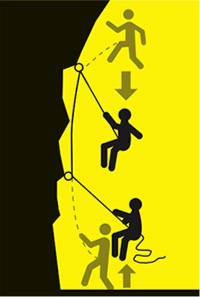
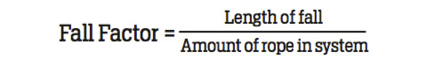

发信人: spinor (klein), 信区: outdoor
标 题: 成为一个好的攀岩保护者的25+个技巧(转)
发信站: 饮水思源 (2015年12月31日19:36:22 星期四)
译文：http://blog.sina.com.cn/s/blog_736b669e0102v0k2.html
作者：李爽
原文：http://www.climbing.com/skill/essential-skills-be-a-better-belayer/
作者： Julie Ellison
这些技巧告诉你如何给攀登者提供更安全更贴心的保护
岩者普遍都会比较注重力量和攀爬技巧的提升，然而保护技巧往往被认为是一旦掌握就可
以了的技能：你只需学会如何给绳，收绳，冲坠制动就算会了。错！孜孜不倦的追求保护
技术的提高应该始终伴随你攀登生涯，这就意味着反复的琢磨和练习让你成为一个真正过
硬的敏锐的保护者。我们曾经与向导，资深岩者，甚至是物理学家讨论过关于如何在各种
情况下给予攀爬者最好的冲坠制动，从而得出以下的方法。把这些概念铭记于心，那么作
为一个顶尖的攀岩保护者的优势就是无论你是去岩馆或者野外攀岩都会是一名非常受欢迎
的攀岩搭档。
开始攀爬之前
穿着能够护住脚趾的鞋。因为在承受一次冲坠制动的时候保护者有时需要跳起来并腾空，
这这个过程中很容易撞到一些障碍物而导致受伤。
一副专用的保护手套会帮助你更好的控制绳子（特别是在使用较细的绳子是能够提供更好
的摩擦力）同时不仅能够防止你的手在绳子快速滑动的时候烧伤，还能避免被绳子上可能
缠上的异物划伤制动手。（设想一下，一根带刺的植物粘在绳子上，扎到制动手上很可能
导致保护者瞬间放掉制动端）
判断你的保护范围内的状况，确保你与岩壁之间有足够安全的距离和路径（以防你被突然
拉近岩壁）还要小心那些松动的石头，当你前后左右移动步伐的时候，万一被绊倒就很有
可能会把你的攀爬者拉离岩壁。
这一条是在攀岩保护中最基本的原则，但仍须反复强调：在攀爬者开始攀爬之前永远要重
复确认你的保护器安装和攀爬者的绳结是否正确。
攀爬者和保护者之间的沟通是关键。关于这方面的细节问题，可以参阅“Know The Ropes
”。
如果你是一个体重较轻的保护者，也不要通过把自己扣入地面上的某个固定保护点作为确
保。因为这样做不仅在攀爬者冲坠时不能提供足够的缓冲，产生的瞬间拉力还可能会使自
己受伤。如果攀爬者的体重很明显的大于保护者，并且预判其在线路上有可能发生较长距
离冲坠的情况下，应该考虑找更适合的人做保护。
攀岩保护黄金法则：用你认为最贴心的保护方式保护你的攀爬者，想想你自己在攀爬的时
候会需要怎样的保护。专注于你的攀爬者，不要分神，时刻保持关注。
攀爬之前认真沟通路线细节。比如这里一段比较光滑，屋檐，挂片位置是否有发生直接坠
落地面的严重冲坠的可能，等等... 这样的沟通能够使攀爬者和保护者对于即将面对的一
切有比较一致的认知。
如果你的体重大于攀爬者，要学会如何做动态保护（详见下文）
开始攀爬
小个子的保护者更应考虑使用带有自动制动的保护器，并尽可能贴近岩壁根部，靠近第一
个挂片。这样会尽可能的减小体重大的攀爬者的冲坠距离，同时也减少了攀登者
爬回路线的距离。无论如何，作为体重较轻的保护者在攀爬者发生冲坠时会被拉向岩壁是
很正常的，所以一定要当心最下面的第一个保护点。曾经发生过恐怖的案例，保护者被猛
然拉起，手指被第一把快挂卡断了。
除了给绳的时候，你的制动手永远要保持制动的姿势时刻准备着，因为攀爬者有可能会力
竭，偏离路线，忘了动作，害怕，或者手点滑脱。无论当攀爬者停下休息还是正在攀爬，
他都随时有可能脱落。
运动势态的感知：要了解你的攀爬者处在什么样的位置，如果此时冲坠的话，他（她）有
可能会撞到哪里。有时你可能需要给他多一些绳长以便在一旦发生坠落时躲开一个屋檐，
或者你需要收短绳长以免脱落时拍到下面的平台。
注意绳子标记：绳子的中点的位置（你是否会需要放你的攀爬者下降？），末端在哪里，
对于绳子的延展性你是否估计合理，平顺的给绳，是否打了绳尾结，等等。
提醒攀爬者注意腿和绳子的关系是你的职责（如果他（她）的腿放在绳子和岩壁之间，在
冲坠时就可能会发生身体上下翻转，头就很可能会朝下磕到岩壁上）。因此一旦你发现这
种情况就必须马上做出提醒：“大牛，注意你的腿！”或者“哥们儿，看着点儿绳子！”
提醒攀爬者正确的扣入绳子和快挂也是你的职责，如果他（她）出现以下错误情况：Z字型
挂绳（绳子从低处保护点拉起扣入高处保护点）如图：
 screen.width - 200){this.width = screen.width - 200}">
或者反向扣入绳子，（领攀者一端的绳子由快挂外侧穿过锁，从锁与岩壁之间穿出。正确
的是从锁的外侧穿出，远离岩壁）如图：
 screen.width - 200){this.width = screen.width - 200}">
你就应该马上大声提醒你的攀爬者纠正错误。如果你对上述两种情况不明白，就必须先补
习攀岩基础知识。
当攀爬者的位置距离地面很近的时候，你应该留出很少的绳长以免他（她）摔在地上。当
他（她）的位置向上移动时再给一点点给绳使他（她）有足够的绳长可以拉起来扣入保护
点。
提前预判扣入时机并且在绳长的处理上要保持反应迅速。无论攀爬者在低于腰部的位置还
是高于头顶的位置扣入绳子，你都需要迅速给予足够的绳长以防止他（她）拉绳受阻。如
果你没有及时给绳不仅可能让攀爬者很抓狂，还有可能会造成他（她）意外脱落。当然如
果他（她）没能扣入绳子，或者绳子突然脱手，你必须马上收回绳长以防止他（她）发生
长距离的冲坠。
攀爬刚刚起步的阶段，保护者应该站在攀爬者的一侧，这样万一攀爬者脱落的时候就不至
于砸在你的头上。需要的话保护者还应该主动贴近岩壁帮助调整绳子位置使攀爬者轻松跨
过绳子。
尽可能鼓励你的攀爬者并使其消除疑虑。也许他（她）正需要你的精神支持去通过眼前的
难点。方法很简单，“你可以的，大牛！”，“加油啊！”之类的话语可能回帮助他（她
）爬得更高。
几种情况带有自动制动装置的保护器不一定会完全锁死：你的攀爬者体重特别轻，攀爬者
不是发生冲坠，只是向后坐在绳子上，或者攀爬者身后拖着很长的绳长给攀登带来阻力…
总之你的制动手要一直握住制动端。
在攀爬者把绳子扣入第一个保护点之前你应该站在他（她）的后方，抬高手臂时刻准备在
他（她）滑落时保护他（她）安全落在地面上。
当攀爬者在线路较高的地方发生冲坠后，你可以配合攀爬者向下拉绳的动作，利用体重向
后坐，再迅速收绳。如此反复就可以帮助他（她）返回合适的高度。在仰角地形也可以用
这种方法帮助攀爬者返回。要点是当他（她）拉绳子的时候保持绳子完全受力。
保护时可以通过调整两脚重心，稍微调整站姿，尽量活动脖子和眼睛，放松身体等来减缓
疲劳疼痛或者脖子抽筋等不适。
运动攀中下放攀爬者时，你实际上应该贴近岩壁，甚至是靠着位于第一个挂片正下方的岩
壁。假如你在下放的过程中远离第一个挂片的话，在这枚挂片上就会产生非常大 的向外拉
力，然而挂片的设计是主要承受向下的拉力。而且，这个挂片所承受的拉力远远大于路线
上的其它挂片。
动态保护
当先锋攀登者发生冲坠，我们的第一反应是马上死死制动绳子，尽量减小冲坠距离。但这
可能会导致攀爬者狠狠地拍到岩壁上，导致脚踝受伤，脊椎受伤，如果头朝下的话甚至是
严重的脑部伤害。能够减少这些伤害的方法就是给予攀爬者一个“软着陆”，既动态保护
。这能够减弱攀爬者冲坠时撞击岩壁的强度从而最大程度的减小受伤的几率。要牢记于心
的是动态保护技术并不适用所有情况，这其实是一个非常高深的保护技巧。在你使用这项
技术之前问自己下列问题，如果你的答案都是“是”的话，则说明适合使用动态保护技术
。
 screen.width - 200){this.width = screen.width - 200}">
问题一：长距离冲坠的路径是否排除平台，光滑岩壁（slab），或者其它有可能撞到攀爬
者的障碍物（包括地面）？如果有上述情况，就要使攀爬者的落点控制在一个能够避免上
述障碍的地方。
问题二：保护者的体重是否相当或大于攀爬者？
一个体重很轻的保护者在制动一个冲坠的时候通常会被拉向空中，这等于已经被动的给了
攀爬者提供了缓冲。
问题三：你是否在攀爬一条需要放置保护点的传统路线？给予缓冲会减少冲坠时带给保护
器材的冲击。这可能就意味着安全的冲坠制动而不是把保护设备从岩缝中拔出。
延展阅读
我们与物理学家和岩者 Adam Scheer 一起探讨了动态保护的原理。在攀爬者的体重开始作
用于绳子的同时保护者起跳。由于保护者通过起跳介入了向上拉升的趋势，这使得把攀爬
者向上拉的作用减少。实质是从攀爬者的角度上讲是减少了他（她）的体重。使制动变得
柔和就等于延长了时间。保护者需要保持脚步轻盈并且做好准备突然被拉向岩壁。保持膝
盖和脚放松可以减低冲击。掌握起跳时机是艺术，科学，和大量练习的综合技能。你应该
在攀爬者开始对绳子施加下拉力的瞬间开始向上跳。然而冲坠往往发生的很突然，所以如
果攀爬者距离最后一个保护点不是很高的地方开始冲坠，保护者通常应该在攀爬者脱落的
瞬间开始起跳。如果攀爬者距离最后一个保护点超过3米或更高，保护者则可以停顿一下再
起跳。
 screen.width - 200){this.width = screen.width - 200}">
冲坠系数＝冲坠距离／有效绳长
不要给多余的绳长。这会导致制动冲击力加大。因为它增加了冲坠系数。如果一个攀爬者
的冲坠距离是3米，有效绳长是6米，冲坠系数为0.5.如果保护者多给了1.5米的绳长（4.5
米的冲坠距离，7.5米的有效绳长），那么冲坠系数则上升为0.6，导致加大了制动的最大
冲击力。只有在为了避免攀爬者撞到障碍物的时候才给予更多的绳长。
不要在错误的时机跳跃。如果保护者起跳太早，他的体重实际上会在冲坠接近最大冲击力
的时候进而施加给攀爬者，这时保护者就好像一个秤砣，假如保护者开始下落的时候，他
的冲力将会被冲坠者吸收，这会导致一个冲击力更大的制动。
不要跑向岩壁，当第一个保护点位置比较高（超过6米左右）的时候这样做并不会减缓冲击
力。这可以用三角形原理来解释。（Scheer说，相信我，我计算过。）关于更多相关信息
，可以访问 climbinghouse.com
Adam Scheer 物理学博士和攀岩爱好者。Adam曾为climbinghouse.com做过有关攀爬和保
护的物理研究。他目前正在致力于研究新的生物燃料。
--
※ 来源:·饮水思源 bbs.sjtu.edu.cn·[FROM: 10.185.56.6]
※ 修改:·spinor 于 2015年12月31日19:40:38 修改本文·[FROM: 10.185.56.6]
|